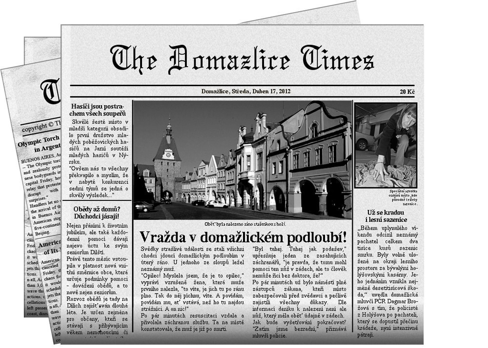

Drama v Domažlicích proběhlo v sobotu 28.4. s celkovým počtem dvanácti účastníků a dvou organizátorů. Byla to jakási jednodušší šifrovačka spojená s pár akčními prvky (které se příliš nepovedly).
Hra byla založená na následujícím příběhu. Jediné, co k vyřešení úkolu potřebujete je dobrý nápad a mapa Domažlic. Celá story je trochu upocená - chtěl jsem z toho udělat veledílo, ale trochu jsem nestíhal, málo spal a tak vzniklo, co vzniklo…
Slunce pomalu klesalo k obzoru a svítilo muži přímo do očí. Příliš to nevnímal, jen bez přemýšlení sáhl po stínítku a pokračoval v rychlé jízdě. Spěchal. Seděl za volantem celý den a pomalu se blížil k cíli své cesty. Vyrazil jakmile obdržel zprávu, zastavil jen párkrát.
Ve městě snížil rychlost jen nepatrně, první křižovatkou projel za hlasitého troubení ostatních aut, které jakoby ani neslyšel. Pak přeci jen trochu zpomalil, aby se rozhlédl po názvech ulic. Nic mu neříkaly, nebyl ve městě už pár desítek let. Ulice, které tenkrát znal, se teď patrně jmenovaly docela jinak.
Zastavil u chodníku: "Dobrý den," zavolal na pána stojícího na chodníku, "potřeboval bych poradit, jak se dostat…" Zbytek věty se ztratil v hluku projíždějícího kamionu. Patrně neslyšel, pomyslel si a chystal se otázku zopakovat, když tu pán spustil.
odmlčel se.
"Promiňte, ptal jsem se…", zkusil to znovu muž sedící v autě.
"Já vím, já vím, vždyť vám to povídám," usmál se člověk se na chodníku, "Teď pozorně poslouchejte, kudy dál:
Na shledanou, " a pokračoval pomalu dál svou cestou.
Muž v automobilu procedil mezi zuby něco nepříliš slušného, ale protože v dohledu nebyl nikdo další, koho by se mohl zeptat, seděl a přemýšlel. Pak se podíval na ceduli s názvem ulice, usmál se, pomalu projel pár ulicemi a na konci jedné zastavil a zamířil k vrátnici.
Řešení je v poznámkách pod čarou.1
"Dobsrý den," oslovil muž z automobilu sleečnu za okénkem, "jsem Mareš, Marek Mareš. Přijel jsem…"
"Čtvrté patro, pokoj 234," slečna ani nevzhlédla.
Marek se chvíli pokoušel najít výtah, po chvíli to ale vzdal a raději vyběhl po schodech. Před pokojem se vzastavil. Zhluboka se nadechl a zaklepal.
"Tak jsi dorazil," uvítala ho ve dveřích žena, která vypaedala, jako kdyby pár nocí nespala. Tvář měla strhanou, kruhy pod očirma, vlasy se snažila narychlo uhladit. Marka překvapila barva její kůže, připomínala mu starý zežloutlý papír.
Příliš nezdržoval a pokračoval rovnou do pokoje. Byl průměrně zařízený a vypadal udržovaně, Marek ale ihned zaznamenal zatuchlý zápach místnosti. Uprostřed stáhla postel.
"Jak je mu?" zepřtal se ženy, která mu otebvřela.
Neodpověděla, do očí jí vrhkly slzy a ona schovala obličej do dlaní. Marek pokročil blíže k posteli, u které seděl muž držící starce za ruku.
"Neměl jsi jezdit," otočil se muž na Marka.
"Je to můj otec," odvětil.
"Ty jsi svého otce távno ztratil. Zřekl ses ho. Zřekl jsi se nás všech!" Marek neodporoval. Tiše stál a díval se na umírajícího muže na posteli. Ten pomalu otevřel ooči a prázdným pohledem se zahleděl před sebe.
"Už tu je?" zašeptal tiše.
"Ano, tati, přijel." odpověděl muiž u postele.
"Marku, já ti odpustil," pokračoval tedy pomalu, "usmiřte se s bratrem. Co bylo moje, bude vaše. Buďte zajedno a pokračuvte v mém díle. To je mé poslední přání. A teď běžte, chci být sám."
Řešení opět pod čarou.2
Lidé pomalu procházeli brankou, nasedali do aut a odjížděli. Obloha byla šedá, foukal studený vítr a nikdo proto zbytečně nepostával - i smuteční kondolence byly dnes nezvykle stručné.
"Jak dlouho tu ještě zůstaneš?" zeptal se Marka bratr. Oba stáli před brankou a podávali si ruce s odcházejícími.
"Pár dnů, možná týden."
"Jestli chceš, můžeš se z hotelu přesunout k nám domů, místa máme dost," navrhl bratr.
"Díky, brácho, ale raději ne. Rád se vracívám v nocích pozdě," usmál se Marek, "všiml jsem si, že Vlastě není úplně nejlépe a tak vám raději nechám váš klid."
"Dobře, jak chceš," na chvíli se odmlčel.
"S Vlastou se to táhne už déle," odkopl kamínek do křoví, "navíc teď pár nocí špatně spala, vždyť víš. Říká mi, že to není nic vážného, ale já už jí moc nevěřím - poslední dobou jezdí čím dál víc do nemocnice. Tak ať mi neříká, že to nic není. Alespoň že Adam je už starší, už se o sebe postará sám."
"To je dobře. Kolik už mu vlastně je?" pokračoval Marek v konverzaci, i když bylo na první pohled znát, že si oba povídají jen z povinnosti.
"Za měsíc mu bude jedenáct."
Chvíli postávali mlčky a vyprovázeli poslední odcházející. Jakmile odešel i poslední, nasedli do auta a vraceli se domů.
"Chceš zavést k hotelu?"
"Jo."
Ze schodů ještě Marek zamával na projíždějící auto a pak vkročil dovnitř. Pomalu vycházel po schodech. Pokoj měl skoro až nahoře a výtah opět nikde nenašel.
"To je zvláštní," pomyslel si, když se seshora podíval na točité schody, "asi moderní architektura."
Řešení pod čarou.3
To, že otcovu poslední vůli nedodrží, bylo Markovi jasné od prvního okamžiku. Celé jeho podnikání považoval za ztrátu času. Kdysi to chtěl zkusit. Rozjet obchody podle svých představ. Brzy ale narazil a protože nechtěl ustoupit ani on ani jeho otec, skončilo to dvacetiletým vyhnanstvím. Dodnes si na ten den vzpomínal.
Chtěl se svého dědictví co nejdříve zbavit a že se to Lukášovi, jeho bratrovi, nebude líbit, si byl jistý.
Vždycky to byl jen tátův poslíček, pomyslel si a nahlas si odfrkl. Ničeho nedosáhl a s jeho vedením půjde podnik do bankrotu. Dříve nebo později. Tím si byl jist.
Stačilo pár telefonátů, aby obvolal několik svých známých, sehnal důležité kontakty a pustil se do vyjednávání. To míval nejraději. Když se do toho pustil, dokázal nakupujícího zatlačit tak do kouta, že raději na jeho návrh přistoupil, i když byl pro něho nevýhodný. Tentokrát však doufal, že bude mít celou transakci co nejdříve z krku.
První zájemce nebydlel daleko. Marek se rozhodl, že nebude vyjíždět s autem z garáže a raději si udělá po městě kratší procházku.
Marek dorazil na místo ještě dříve očekával. Před domem seděl na silnici chlapeček a kreslil si cosi křídou po zemi. Markovi se to na první pohled zdálo jako jakýsi druh skákacího panáka, ale když se na kresbu díval déle, už si tím tolik jistý nebyl.
"Zajímavé, hochu, a co to je?" nedalo mu to, aby se nezeptal.
"To, to, to nic není. Nic!" odpověděl překvapeně chlapeček a rychle zmizel v domu.
Řešení pod čarou.4
"Tak jsme dohodnuti," seriózně oděný pán vstal a podával Markovi ruku, "pokud chcete, mám již připravenou smlouvu, stačí už jen doplnit drobnosti a můžeme to podepsat, ať to máme z krku, co říkáte?"
Radostí téměř zpíval vše, co řekl. Právě mu padla do klína celá konkurence, kterou ve městě ještě vůbec měl. Nečekal, že se bude dědic podniku tak rychle chtít své části zbavit a ještě za takovou nízkou částku. Nezískal sice většinu, ale i se získanou částí měl v podniku velké slovo.
"Co kdybychom se na to něčeho napili?" nabízel s úsměvem sklenku.
"Rád, proč ne." nenechal se Marek příliš dlouho přemlouvat.
Chvíli v tichosti vychutnávali hnědou tekutinu, s rozkoší ji převalovali v ústech a znalecky přikyvovali.
"Čím se vůbec vy, pane Mareši, zabýváte?" otázal se pán po chvíli.
"Ale to víte, doba je těžká, musím brát, co je. Chvíli pomáhám tam, chvíli onde. Naštěstí mám pár přátel, kteří mi rádi pomohou. Nemohou příliš, jenom občas. Domluvit zakázku, vyjednat kontrakt, uzavřít obchod," odpověděl Marek trochu úlisným tónem.
"Chápu, je dobře mít přátele na správných místech," mrkl na něho pán za stolem, "také bych občas ocenil mít pár známých."
"Za menší provizi, proč ne…"
Pán se hlasitě zachechtal: "Vy se mi líbíte, pane Mareši. Myslím, že spolu budeme moci ještě párkrát dobře spolupracovat."
Marek s úsměvem přikývl a chvíli tiše upíjel ze sklenky.
"Máte zajímavý kalendář," poznamenal, když jeho zrak utkvěl na předmětu na stěně.
"A, ano, čísla, to je moje záliba."
"Dávají nějaký smysl, nebo je to pouze umělecký výtvor?"
"Jistě, mají smysl. Pro každý měsíc musí být vybrána správná čísla. Jsou čísla krásná a méně krásná, jsou čísla sudá a čísla lichá. Některá čísla mají svůj vlastní význam."
"Ach tak," odtušil a raději se už více neptal.
139173957139577917395779173957199937193755319373 131322335791359871359173102113193740202401913997 197392493791734869371937007371734243797395391777 119739283739302960337192837113744039373933937393 133939988933001970239364713939902039173391719939 539173554034491539049489335933350423333915359331 139339935424551955144495757153539102202489191999 139173957139577917395779173957199937193755319373 Srpen
Řešení pod čarou.5
"Nechceš někam hodit?"
Žena se překvapeně ohlédla, aby zjistila, kdo na ni mluví.
"To bys byl hodný," odpověděla, jakmile muže v autě poznala, "myslela jsem, že už jsi odjel."
"Chtěl jsem, ale obchodní záležitosti mne trochu zdržely. Musel jsem se zbavit dědictví, to víš."
Žena ustrnula.
"Tys to prodal?" zeptala se po chvíli tiše.
"Jo. Nebudu nic předstírat, ale po těch pár dnech si s tvým mužem nerozumím o nic víc než před dvaceti lety. Brácha dokáže spoustu věcí, jen obchodovat ne. A tak se nechci dívat, jak jde podnik od desíti k pěti. Radši ať se s tím trápí někdo jiný."
"Bude zuřit, víš to. Nabídl jsi mu vůbec svůj podíl?"
Marek se usmál: "A co bych z toho měl? To bych mu ho mohl rovnou darovat. Kam vůbec chceš odvézt?"
"Sem," řekla a podala mu mapku:
Náhle jí ruka vystřelila k břichu a z úst se jí vydralo bolestné zaskučení. "Jsi v pořádku?" otočil se na ni znepokojeně Marek. "Jsem, jsem. Ale jeď, prosím, jeď rychle…"
Řešení pod čarou.6
"On to udělal! On to udělal!" běhal Lukáš, Markův bratr po pokoji, "jak si to mohl dovolit?"
Do cesty mu přišla židle, kterou nasupeně odkopl stranou. Hned za ní letěly všechny papíry, které prudkým pohybem shodil ze stolu.
"Uklidni se," řekla Vlasta potichu.
"Uklidni se? Jak se můžu uklidnit? Teď, když mi vlastní bratr vrazil kudlu do zad? Mizera! Blbec!"
Následovala ještě řada horších označení. Lukáš stále pobíhal po pokoji ode zdi ke zdi. Pak prudce otevřel skleněnou skříňku a nalil si skleničku plnou až po okraj. Vypil ji až do dna.
"Debil jeden!"
V rychlém sledu následovala ještě druhá a třetí sklenička.
"Bude se smažit jako Hus. Bude se topit a neřekne ani slova! Já mu dám, já mu ukážu. Bude se plazit prachem dole po zemi."
Náhle mu v očích zasvítilo: "Zastřelím ho!"
"Přestaň," ozvala se Vlasta ještě potišeji, ale Lukáš ji neslyšel.
"Zastřelím ho!" zařval hlasitěji. Pak se zachechtal a zařval to ještě jednou. Během toho, co se přehraboval v zásuvkách stolu se stále smál. Vyndal na stůl černou krabičku, otevřel ji a potěšeně se usmál.
"To bude divadlo!" řekl a vyběhl za dveří.
Vlasta pomalu vstala a došla do kuchyně. Tam si vzala hrst prášků a zapila je sklenicí vody. Pak si povzdychla a začala vytáčet číslo na telefonu.
Řešení.7
Dostali jste se až na samý konec dnešního příběhu. Jste překvapeni? Já velice. Nyní máte možnost zahrát si na Hercula Poirota. Zapojte své šedé buňky mozkové a označte vraha. Samozřejmě musíte, stejně jako pan Poirot, poskytnout náležité vysvětlení. Ale to už pro vás bude, po celodenních útrapách a bojováním s šiframi, legrace.
Řešení, dole.8